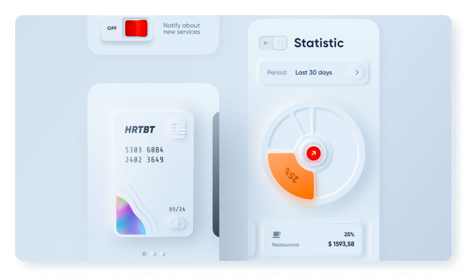
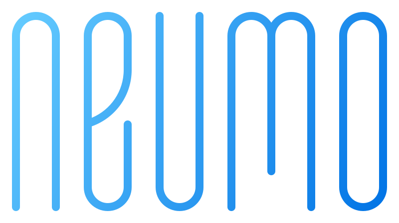

What is NUEMO?
Overview
In 2020, Neumorphism emerged as a new design trend, but some says that Neumorphism is like 'Zombie
trend'.
It's because 'Neumorphism' rarely follow the 'Web Content Accessibility Guidelines'.
I totally agree with that, so I tried to design components that would improve accesssibility.


is a UI framework designed with Neumorphism.
suggests well-made UI components with Neumorphism.
will continue to be updated with the aim of providing various examples.
Color System
Creating rules for Neumorphism is a challenge. It's much more difficult than creating a typical UI
design system.
When we create a new design system, we may start by setting the primary color and setting the
specifications.
However, in Neumorphism, the bright side of the shadow, the dark side of the shadow, and the main
color must be specified. While setting shadows manually will ruin the design system. In order to
give a sense of unity, we had to create the best shadow when we set the key color.
To make it happen, we used ‘CIE LCH color system’.
Why don’t we use HSL Color?
In order to automate neumorphism design, we need to programmatically present the visual intensity of the
shadow values. However, we see the intensity of shadows differently by actual color lightness/darkness even if it
is set with the same lightness difference.
You can see that the green, yellow, blue, and red boxes below have different shadow intensities.
Only the hue has been adjusted, but we feel the tones of colors are different.
(green & yellow are brighter than blue & red)
HSL(120, 70, 45)
HSL(120, 70, 60)
HSL(120, 70, 75)
HSL(60, 70, 45)
HSL(60, 70, 60)
HSL(60, 70, 75)
HSL(240, 70, 45)
HSL(240, 70, 60)
HSL(240, 70, 75)
HSL(360, 70, 45)
HSL(360, 70, 60)
HSL(360, 70, 75)
How does it come with LCH Color?
Unlike other color systems, LCH calibrated the visual tone that the user feel.
Changing the hue of LCH color shows the real hue that people think.
Test your own color & intensity of shadows!
LCH(88, 61, 139)
LCH(82, 91, 136)
LCH(73, 94, 145)
LCH(88, 25, 59)
LCH(82, 40, 59)
LCH(73, 94, 60)
LCH(88, 21, 241)
LCH(82, 32, 240)
LCH(73, 48, 240)
LCH(88, 18, 0)
LCH(82, 29, 1)
LCH(73, 45, 1)